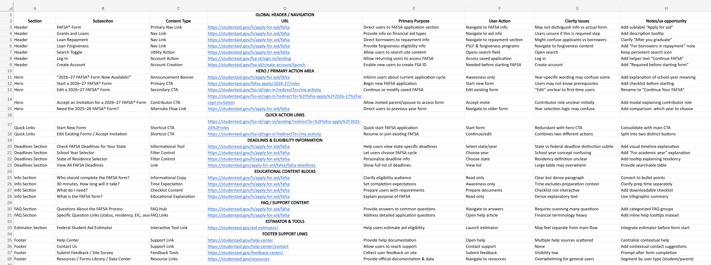
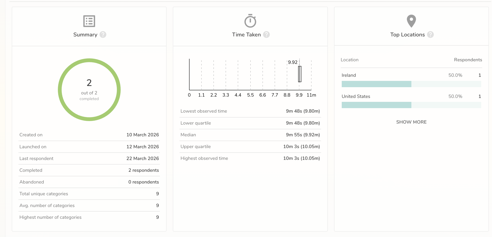
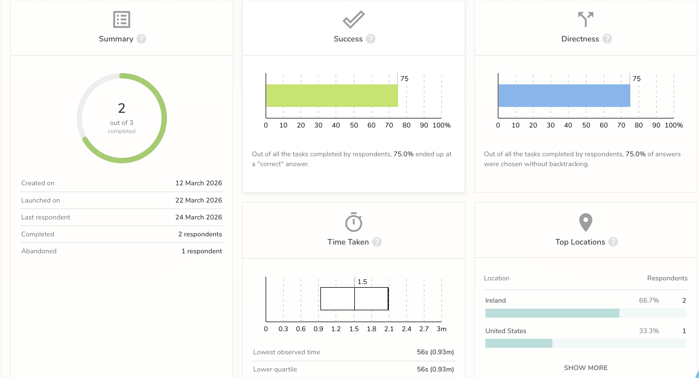
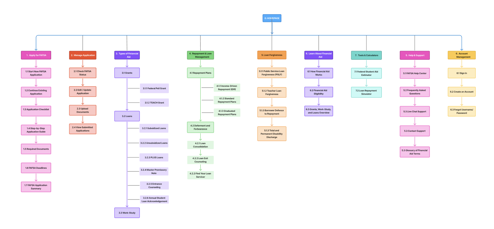

From Complexity → Guided Experience
I redesigned the FAFSA experience into a structured, step-by-step flow that guides users from start to completion.
Content Inventory
I conducted a content inventory to map all existing FAFSA pages and understand the overall scope.
What I Did:
- Reviewed all major FAFSA sections
- Documented content structure and complexity
- Identified duplicate and outdated content
Key Findings:
- Overlapping content across sections
- Lack of clear hierarchy
- Information overload for users
Outcome: Established a foundation for simplifying and restructuring content.

Content Audit
I conducted a content audit to evaluate clarity, consistency, and usability of FAFSA content.
What I Did:
- Analyzed readability and clarity
- Reviewed terminology consistency
- Identified redundant content
Key Findings:
- Complex financial language reduced understanding
- Inconsistent labels across pages
- Duplicate content increased confusion
Outcome: Simplified language and improved clarity across the experience.

Card Sorting
I conducted a hybrid card sorting study using UXtweak to understand user mental models.
What I Did:
- Users grouped content into categories
- Allowed custom labels
- Analyzed grouping patterns
Key Findings:
- Grants and Loans grouped together
- Users created their own labels
- Loan terminology caused confusion
Outcome: Improved navigation labels and content grouping.

Tree Testing
I conducted tree testing to validate the proposed sitemap.
What I Did:
- Created task-based navigation scenarios
- Tested user success rates
- Analyzed navigation paths
Key Findings:
- Users found key sections quickly
- Some confusion in grants navigation
- Users preferred simpler paths
Outcome: Refined sitemap to improve navigation efficiency.

Sitemap
Based on all research insights, I designed a simplified sitemap.
What I Did:
- Grouped content based on user behavior
- Simplified navigation structure
- Reduced unnecessary steps
Key Findings:
- Users needed clearer navigation paths to find information faster
- The original structure lacked a strong hierarchy across key sections
- Reducing content layers helped lower cognitive load during the application journey
Outcome: The final sitemap created a more intuitive structure, improved discoverability, and established a stronger foundation for a streamlined FAFSA user journey.
